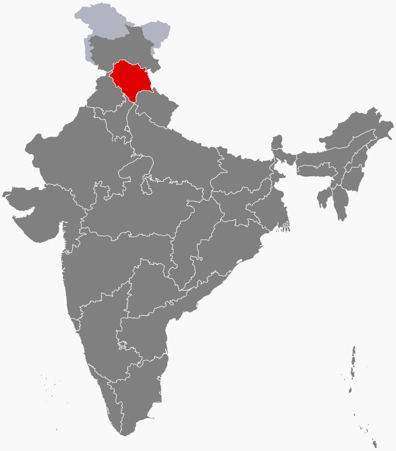

A trip to Himachal Pradesh is truly pleasurable as it is one of the most famous tourist destinations of
India. This land of mountains is a celestial tourist destination where there is
no dearth of tourist attractions. Himachal Pradesh is a must-see destination for those who love
mountains. The state is proud of its glorious history and rich cultural heritage.
There are several monasteries, temples and forts, whose architecture is praise worthy. The views of the
breathtaking mountains, passes, valleys, lakes, springs, waterfalls
and wildlife are sights to behold.
Location
Himachal Pradesh is a state in the north-west India. Covering an area of 56,019 sq km,
Himachal Pradesh is bordered by the Indian states of Jammu and Kashmir on north,
Punjab on west and south-west, Haryana and Uttar Pradesh on south, Uttaranchal on south-east and by
Tibet on the east.

Statistics
Population: 6.9 million
Area: 55,673 sq km
Literacy: 83.78%
Districts: 12
CM: Jai Ram Thakur
History
The Chief Commissioner’s province of H.P. came into being on 15th April, 1948.
H.P. became a part C state on 26th January, 1950 with the implementation of the Constitution of
India.
Bilaspur was merged with Himachal Pradesh on 1st July, 1954.
Himachal Pradesh became Union Territory on 1st November, 1956.
Kangra and most of the other hill areas of Punjab were merged with H.P. on 1st November, 1966
though its status remained that of a Union Territory.
On 18th December, 1970 the State of Himachal Pradesh Act was passed by Parliament and the new
state came into being on 25th January, 1971. Thus H.P. emerged as the eighteenth state of Indian
Union.